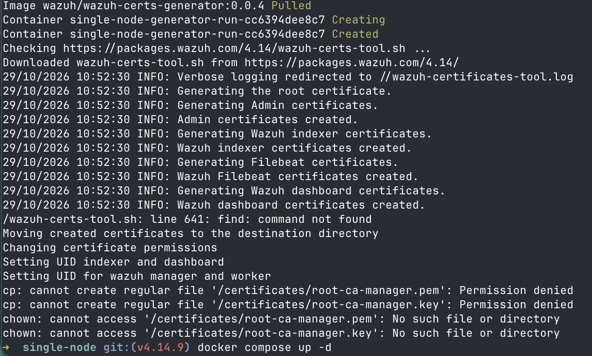
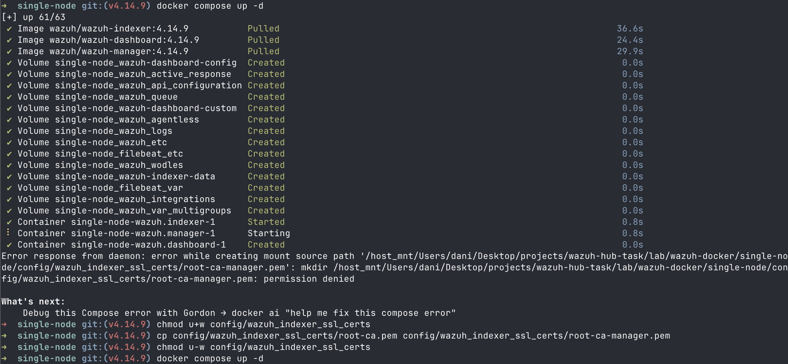
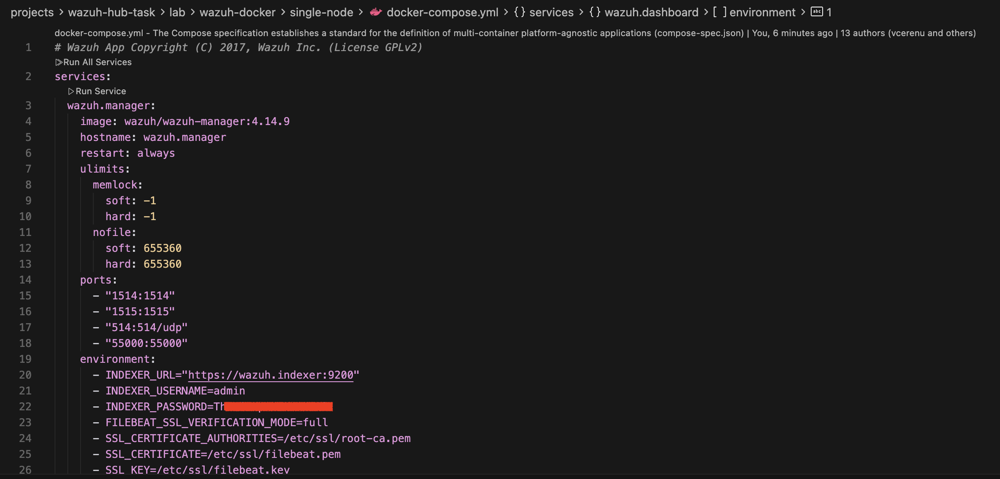
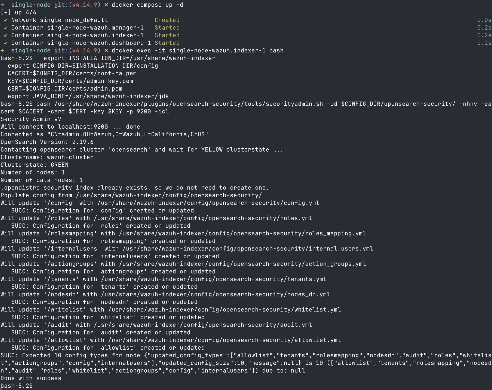
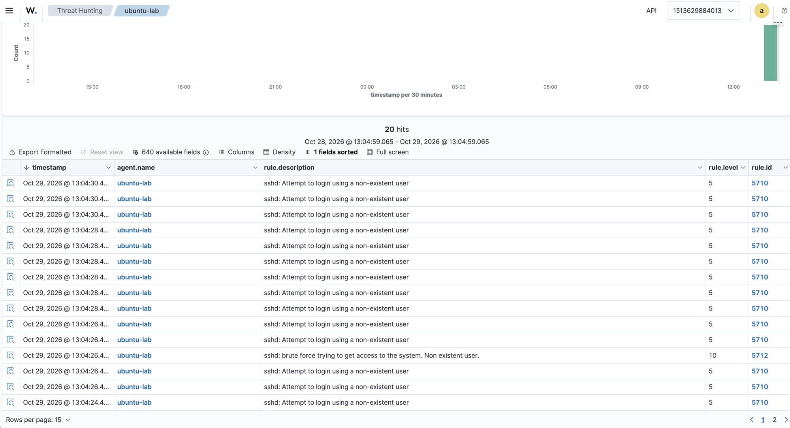
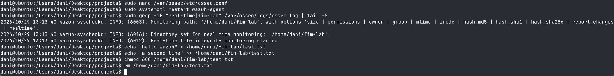
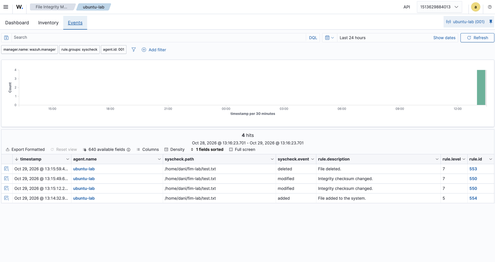
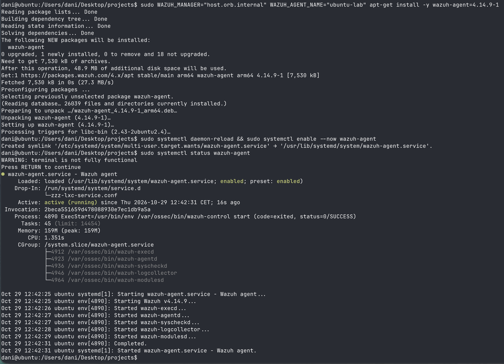
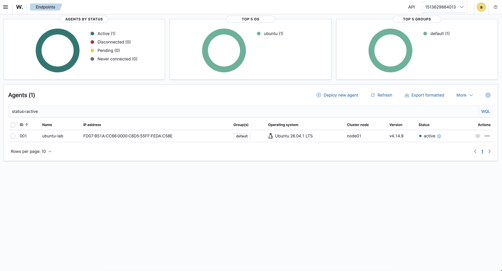

Wazuh Hub
technical task
Dani Barranquero
2026-10-29
Three phases
The lab
Install Wazuh 4.x and explore it.
By hand, no AIThe build
A small SaaS slice on top of Wazuh.
With AIThe conversation
Show what I learned and built.
TodayThe lab at a glance
Why this setup
Docker, official compose
- The Wazuh OVA is x86-only
- This Mac is Apple Silicon
- Reproducible, quick to tear down
OrbStack Ubuntu VM
- A real host: systemd, SSH, a filesystem
- Detections behave like production
- Known from Falco proofs of concept at Prowler
How an event travels
SSH log line → rule 5710 → alert → Threat Hunting
File change → rule 550 → alert → FIM events
What broke, and what it taught me
| Break | What I learned |
|---|---|
| Cert copy denied | On macOS, Docker Desktop bind mounts enforce my user's permissions, so root-ca-manager.pem is never created |
find missing | The cert script continues silently after errors |
Reserved admin password | internal_users.yml hash + securityadmin.sh reload |
nano would not start | Ubuntu does not know TERM=xterm-ghostty |
| No SCA on agent 001 | No CIS policy for Ubuntu 26.04 in 4.14.9 |
AI was used in Phase 1 only to get past these errors.

find missing, cp permission denied
Changing a reserved password


securityadmin.sh reloads the security config: “Done with success”The dashboard cannot change admin. The indexer reads internal_users.yml only on first start.
Detection 1: SSH brute force

Detection 2: real-time file integrity

/home/dani/fim-lab, then create, append, chmod, delete
test.txt on agent 001| Event | Rule |
|---|---|
| added | 554 |
| modified | 550 |
| deleted | 553 |
The agent is live

WAZUH_MANAGER=host.orb.internal; service active
“I have hundreds of failed CIS checks.
What do I fix first?”
Long lists
Deciding what comes first is the hard part
Read-only
Current state from the server API
Honest
Says what it could not check
Architecture
What one brief contains
| summary | the situation, two sentences |
| fixes | top 5: why, fix, evidence |
| coverage | confidence, counts, gaps |
| source | claude · claude-code · mock |
| fallback_reason | why the mock ran |
| stale | cached copy, Wazuh down |
Coverage gaps are computed by rule, never by the model.
// docs/examples/brief-000-claude-code.json (trimmed) { "agent": { "id": "000", "os": "Amazon Linux 2023" }, "source": "claude-code", "model": "claude-sonnet-5-5", "fallback_reason": null, "fixes": [{ "rank": 1, "category": "exposure", "title": "Install and enforce a default-deny host firewall in front of ports 1514, 1515 and 55000", "evidence": ["check 31079 (CIS 3.4.1.1) nftables not installed", "listening: tcp 0.0.0.0:1515", …] }, …], "coverage": { "confidence": "high", "sca_failed_checks_total": 46, … } }
Real response from the lab, agent 000 (the manager)
Model vs. rules, same data
Rule-based mock
one check per fix| 1 | Shadowed passwords in /etc/passwd | sca |
| 2 | nftables default deny policy | sca |
| 3 | Permissions on sshd_config | sca |
| 4 | nftables is installed | sca |
| 5 | auditd is installed | sca |
Wazuh ports: not raised
Claude (dev path)
groups checks| 1 | Firewall in front of 1514, 1515, 55000 | exposure |
| 2 | Password storage and aging policy | sca |
| 3 | /usr/bin/sh, sshd_config perms | fim |
| 4 | auditd plus the CIS audit rules | sca |
| 5 | Scheduler, boot, package, banners | sca |
Wazuh ports: ranked first
Agent 000, cis_amazon_linux_2023, 46 failed checks, score 52%. Titles shortened.
Coverage honesty
cis_ubuntu22-04OS requirement fails, policy skippedGET /sca/0010 policies“Not checked”
is not “compliant”
- Confidence low
- Fix 1: restore SCA coverage
- Gap names the policy and the OS mismatch
Failure handling
| Failure | Behaviour |
|---|---|
| Wazuh slow or flaky | Timeout, retries with backoff on errors, 429, 5xx |
| Wazuh down | Cached brief with stale: true, else 503 |
| Wazuh auth fails | 502 wazuh_auth_failed, never hidden by cache |
| Model down or bad output | Mock writes it; fallback_reason says why |
| Is it us or Wazuh? | /healthz process · /readyz Wazuh call |
Every path has tests; none needs the lab or a key. Runbook: docs/runbook.md.
How I worked with AI
docs/plan.mdCLAUDE.md, 2 subagentsMain session free for my questions · Phase 1 by hand
First launch: the worktree landed in the upstream wazuh-docker clone. The subagent stopped, wrote nothing.
Now I always check which repo a worktree belongs to.
What review caught
/usr/bin/sh world-writable?
fixedA symlink. Wazuh reports links as rwxrwxrwx.
Fix in 04463ee: mark likely symlinks in the input, plus one prompt rule.
Baseline read as changes
openOn 001 the model treated first-scan FIM dates as recent changes.
Its own coverage note said FIM is a baseline only.
Both came from reading real output, not from tests. Future: each becomes an eval case.
Dev-only Agent SDK path
No API budget. Real model output on my own Claude Code login: no tools, one turn, never ships (ADR 0002).
| Prowler Studio | Here |
|---|---|
| Agent SDK on each engineer's login | claude-code provider, dev only |
| One agent per job, own tool list | Summarizer: no tools, one turn |
| Typed pydantic results | Output validated against Draft, else mock |
| Isolated worktree per run | Phase 2 built in its own worktree |
| Prompts as Jinja2 templates | Not yet: prompt lives in code |
I co-authored Prowler Studio's rewrite to the Claude Agent SDK (#83).
By the numbers
phase2/hardening-brief, signedFrom slice to SaaS
| Area | Today | Target drawn, not built |
|---|---|---|
| Tenancy | One Wazuh, .env | Tenant ID everywhere, secret manager |
| Request path | Synchronous | Queue, workers, cache-first, 202 |
| Observability | Python logging | OpenTelemetry, SLOs, paging |
| Status | /healthz, /readyz | Plus uptime checks, status page |
| Prompt | One prompt in code | Versioned, flags, evals from feedback |
Same core: read-only client, rule-computed gaps, small payload, deterministic fallback. docs/saas-target.md
With one more day
Fix the open FIM case
Baseline dates must not read as changes
Versioned prompt + feedback
Template, thumbs up/down, first eval cases
CI docs check
Fail when a setting or route is undocumented
Questions?